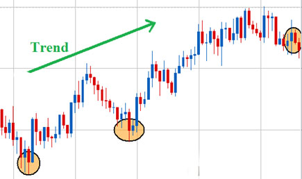

Меню
Меню Основы стратегий
Основы стратегийИндекс Товарного Канала: особенности и использование в опционах
Инструмент анализа Индекс товарного канала получил широкое признание, которое было разработано инвестиционным аналитиком Дональдом Ламбертом в конце 1970-х годов. Он успешно используется многими брокерами и трейдерами, в том числе теми, кто использует бинарные опционы в своей торговле. Этот инструмент инвестиционного анализа является хорошим индикатором трендовых условий и помогает инвестору определить сделку, на которую стоит ориентироваться на основе выявленного трендового рынка.
Подробнее о CCI
Индекс товарных каналов (CCI) - это инструмент, который можно использовать для выявления тенденций на широком спектре рынков. Это тип индикатора, который известен как осциллятор, потому что он измеряет разницу в спринте активов безопасности из скользящей средней.
CCI имеет тенденцию быть аномально высоким в ситуациях, когда цена активов значительно превышает среднюю стоимость. Верно и обратное – когда цена активов намного ниже их среднего значения. CCI является наиболее полезным инструментом, помогающим трейдеру находить активы, которые находятся в состоянии перепроданности или перекупленности.
Индекс товарного канала также может помочь трейдеру определить холмы и долины в фактической стоимости актива, а также показать, что тренд подошел к концу или скоро произойдет возможное изменение направления движения.
Как это может помочь определить новую тенденцию? CCI обычно имеет дело с движением между уровнями -100 и +100 на его графике. Движение, выходящее за пределы этого диапазона вверх или вниз, чаще всего говорит трейдеру, что существует большое количество силы или большое количество слабых сторон, что необычно для актива безопасности, и за этим часто следует длинный ход этого конкретного актива . CCI показывает бычий тренд склонения, когда он показывает значение, которое является положительной стороной, и наоборот, оно имеет медвежий тренд наклона, когда он отображает значение на отрицательной стороне.
Нужно обязательно отметить, что если у инвестора есть привычка использовать нулевую линию и есть потенциал для кроссоверов, то конечный результат может быть легко прослежен на графике. Именно поэтому при использовании индекса CCI трейдеру необходимо дождаться, когда актив будет поднят выше уровня +100. После чего стоит выждать и сделать свою сделку на короткий срок.
CCI также полезен из-за количества периодов времени, которые трейдер хочет использовать. Это весьма удобно. При торговле бинарными опционами всегда должна быть дата истечения срока действия, а часто регулируемый таймфрейм становится ключевым элементом CCI.